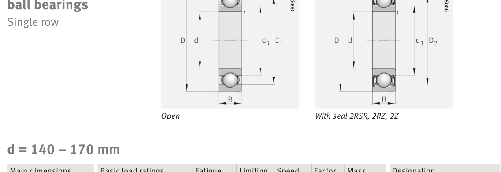

Original catalogue drawing - FAG Schaeffler HR 1, page 272

Scanned from the manufacturer catalogue page listing this part number. All part numbers printed on that table share the same drawing.
Scale cross-section
Blue = inner / outer ring, yellow = rolling element. Drawn to scale from this part's own
dimensions for selection reference only - not a manufacturing or assembly drawing.
Dimension table (mm / inch)
Symbol
Dimension
mm
inch
d
Bore diameter
170
6.6929
D
Outside diameter
310
12.2047
B
Inner-ring / bearing width
52
2.0472
r
Chamfer (min)
4
0.1575
Notes
Weights are given in kg. Load ratings are shown in both the original catalogue units and the converted value (1 N = 0.2248 lbf). Data is provided for selection reference only - confirm against the latest official catalogue before ordering.
Main dimensions
Bore d (mm)
170
Outside dia. D (mm)
310
Width B (mm)
52
Inner-ring OD d1 (mm)
219
Inner-ring shoulder dia. D1 (mm)
260.8
Load ratings & speeds
Basic dynamic load rating Cr (lbs)
50582
Basic static load rating Cor (lbs)
50357
Basic dynamic load rating Cr (N)
225000
Basic static load rating C0r (N)
224000
Fatigue limit load Cur (N)
9400
Factor f0
15.3
Limiting speed nG (rpm)
3,800
Reference speed nB (rpm)
2,950
Weight
Weight (kg)
18.3
Mounting dimensions (fillets / shoulders)
Housing fillet r max (mm)
4
Shaft shoulder da (mm)
187
Housing shoulder Da (mm)
293
Housing fillet ra max (mm)
3
Bearing life (ISO 281 basic rating life)
C / P
Equivalent load P (N)
L10 (106 rev)
L10h at 1,200 rpm
4
56,250
64
889
6
37,500
216
3,000
8
28,125
512
7,111
10
22,500
1,000
13,889
15
15,000
3,375
46,875
Basic rating life per ISO 281: L10 = (C/P)3 with C = 225,000 N. Hours = L10 x 106 / (60n). Life-modification factors for lubrication, contamination and temperature (aISO) are not included.
Source & traceability
Brand
FAG
Source catalogue
FAG / Schaeffler Rolling Bearings HR 1
Catalogue page
p.272 (dimensions)
Load ratings in newtons, fatigue limit load Cur, limiting speed nG and reference speed nB.
Send us the quantity you need and we will come back with price and
lead time, normally within 24 hours. Equivalent parts from other brands can be quoted at the same time.